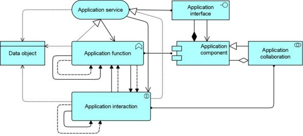

The Application Behaviour viewpoint describes the internal behaviour of an application; e.g., as it realizes one or more application services. This viewpoint is useful in designing the main behaviour of applications, or in identifying functional overlap between different applications.
| Stakeholders | Enterprise, process, application, and domain architects |
| Concerns | Structure, relations and dependencies between applications, consistency and completeness, reduction of complexity |
| Purpose | Designing |
| Abstraction Level | Coherence, details |
| Layer | Application layer |
| Aspects | Passive Structure, Behaviour, Active Structure |
Concepts and Relations
